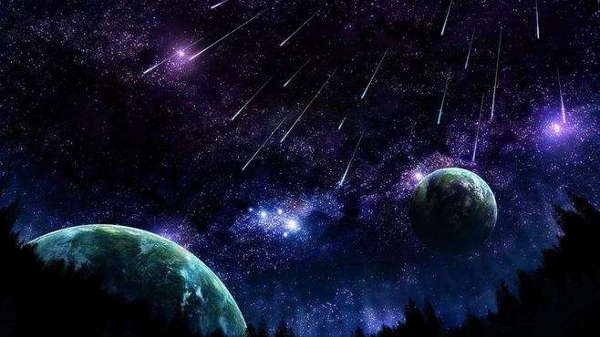

预测一场流星雨，没想象中那么简单
通过母彗星预测流星雨
绕太阳运动的流星体，绝大部分是来自彗星轨道的尘埃。假如母彗星的轨道比较稳定，预测流星雨的发生相对就比较简单。“当彗星轨道和地球轨道接近时，意味着彗星轨道附近的尘埃离地球也比较近，地球在公转过程中就有可能遇见这些小尘埃。”北京天文馆馆长朱进告诉科技日报记者，以狮子座流星雨为例，它的母彗星每33年绕太阳一圈，具有周期性，所以能根据彗星轨道推测狮子座流星雨出现的时间。
但不是所有的彗星都能轻易被找到。观测能力不够或彗星已经碎掉时，通过母彗星找流星就好比缘木求鱼。
这时候，历史资料的重要性就凸显出来。“一般来说，流星雨被观测得越多，预测就越准。比如，狮子座流星雨的预测相对准确，就是因为对它观测时间长且观测资料丰富。”朱进说。
对流星体群本身的观测也能派上用场。“经过多站观测可以获得流星体群一些动力学参数，据此可大概判断流星体群的状况。”朱进表示。
流星体群的密度有大有小，对应着流星雨的流量有大有小。有时，一场流星雨会在一小时内出现上百颗流星。当流星雨的每小时天顶流量超过1000时，被称为“流星暴”。
